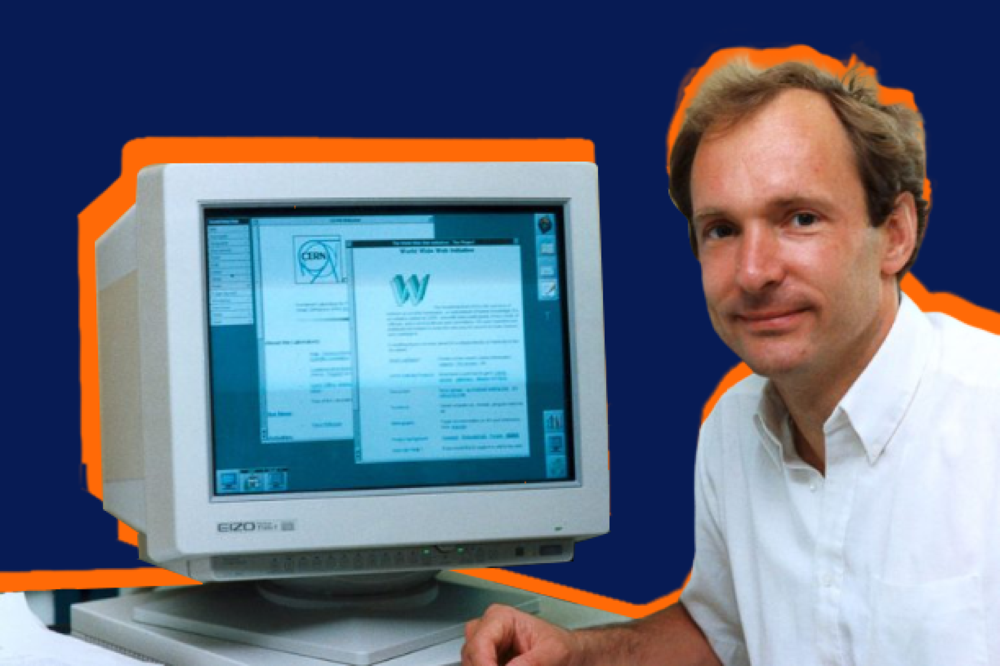

A história da internet e da web começou na década de 1960, com o desenvolvimento da ARPANET, uma rede de computadores criada para interligar universidades e centros de pesquisa. A ARPANET foi o primeiro passo para a criação da internet moderna, permitindo que informações fossem trocadas entre diferentes locais de forma mais eficiente. Nos anos seguintes, a tecnologia evoluiu, e a rede cresceu, conectando mais instituições e se expandindo gradualmente para outros países.

Na década de 1980, o protocolo TCP/IP foi adotado, permitindo que diferentes redes de computadores se conectassem e formassem a base da internet como a conhecemos hoje. Esse protocolo possibilitou a comunicação entre sistemas distintos e facilitou o uso de serviços como o e-mail, que começou a ser utilizado por pesquisadores e empresas. O crescimento da internet foi acelerado nesse período, e mais pessoas passaram a ter acesso a ela, embora de maneira limitada e, principalmente, no ambiente acadêmico e científico.

O grande marco aconteceu em 1989, quando Tim Berners-Lee desenvolveu a World Wide Web enquanto trabalhava no CERN. A web permitiu que informações fossem organizadas em páginas interligadas por links, criando uma estrutura de navegação mais intuitiva e acessível para qualquer pessoa com acesso à internet. Nos anos 90, com o lançamento de navegadores como o Mosaic, a web começou a se popularizar e se expandiu rapidamente, dando início à era da navegação pela internet e à explosão de sites e conteúdos.

Com o passar dos anos, a internet e a web se tornaram indispensáveis para o cotidiano, sendo responsáveis por mudanças drásticas na maneira como as pessoas se comunicam, compram e acessam informações. No final dos anos 2000, a internet se tornou mais acessível, com o surgimento de redes sociais e plataformas de comércio eletrônico. Atualmente, a web continua a se expandir, com novas tecnologias e serviços que continuam a transformar a sociedade digitalmente.